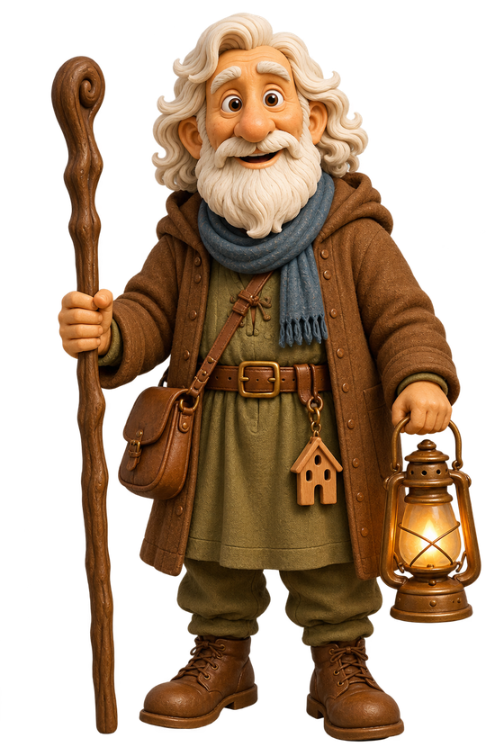
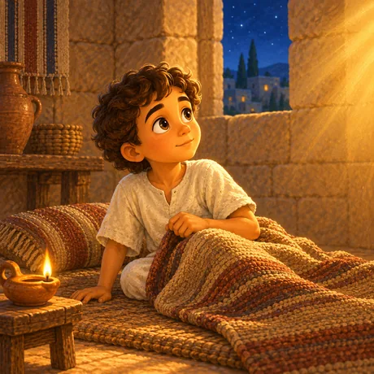
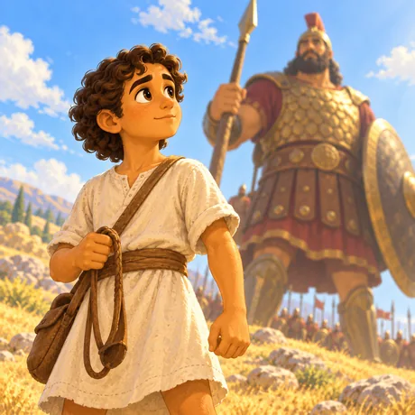
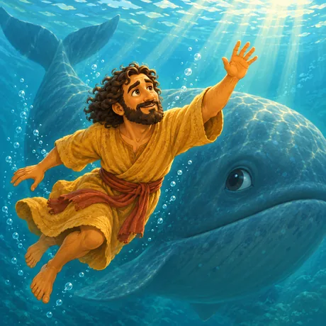
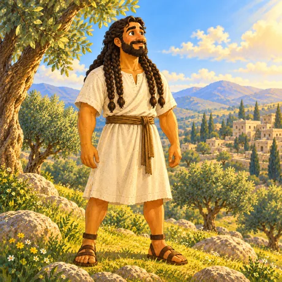

Coming to the App Store
Pilgrim House Kids
Little Stories. Eternal Truth.
Bible stories for small children, told calmly.

Stories read aloud at bedtime, pages to read together, a comic, and quiet games that ask a child to look and think rather than to hurry. In English and Brazilian Portuguese, for roughly four to eight years old.
What's inside
-
Stories to listen to
Eight so far, read aloud, and written for the end of the day rather than the middle of it.
-

Pages to read
The same stories in large type, an illustration on every page, narrated for a child who cannot read yet.
-
A comic
The Pilgrim tells two children about the night a King was born, in twenty painted pages.
-
Games
Matching, counting, sequencing, spelling. No timers, no scores, nothing to lose.
-
A Parents area
Behind a gate a small child cannot pass: language, settings, and the privacy policy in full.
The stories
Each one read aloud, with its own illustrations, in both languages.
- Noah's Ark

David and Goliath
Jonah and the Big Fish- Jesus Calms the Storm

Samson and Delilah- Samuel Hears God Call
- Jesus Heals a Paralysed Man
- Daniel in the Lions' Den
The first comic
An old man with a lantern, two children who want the story again, and the night a King was born in a room where the animals slept. Twenty pages, painted rather than drawn — and by the end one of the children has worked out what to do about the boy sitting on his own.
What it does not have
None of this is missing by accident. A children's app should not be built to pull a child back to it.
- No advertising, and no promotion of anything to a child
- No accounts, no names, no email addresses, no birthdays
- No chat, no comments, no links out, nothing another user can send
- No streaks, no scores, no timers, no notifications
- Nothing collected, and nothing that leaves the iPad — it all works in Airplane Mode
Where to get it
Pilgrim House Kids is in development for iPad and iPhone, and is not on the App Store yet. This page will carry the link when it is.
Questions, or a school or church that would like to try it early — write to us. A person reads every message, in English or Portuguese.
Pilgrim House Publishing · Australia
Little Stories. Eternal Truth.